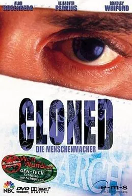

The genetics
Human cloning carried out in secret within reproductive medicine is the premise of this television film. A mother discovers that her dead son exists in several copies, created without the parents' consent, and the drama follows her attempt to uncover who made them and why. The scientist, a fertility specialist, is portrayed as a man who has sold out, justifying unethical methods by their supposed benefits, but the main antagonists are the business interests financing the work, which see cloning as a step towards producing replacement organs. The film thus plays on two real fears raised by cloning: the misuse of patients' biological material and the idea of humans as a source of spare parts. It aired in 1997, the year the cloning of Dolly the sheep was announced. Information on the film is limited, so this summary relies on brief synopses and one review.
How genetics is portrayed
- Overall portrayal of genetics
- negative Cloning is shown as a secret, commercial violation of patients and the commodification of human beings, resisted by a heroine who exposes it.
- Outcome of the genetic intervention
- negative Children are cloned without their parents' consent, women are betrayed, and the company endangers Skye and Rick to protect the operation until it is exposed.
- Dr. Wesley Kozak
- villain Aim: commercial, curiosity (negative). The fertility specialist secretly clones Skye's embryo into several boys implanted in unknowing women ('Baby 2000') as a step towards cloning organs, claiming the welfare of humanity and that ends justify means; the film calls him a sellout, Skye throws 'First, do no harm' back at him and his scheme is exposed.
- The fertility company and its executives (John Gryce)
- villain Aim: commercial (negative). The 'aggressive capitalists' behind the clinic fund the cloning as practice for a replacement-organ business and send security men to stop Skye from exposing it.
The story
A year after the death of their young son, Skye Weston and her husband Rick are thinking of having another child when Skye sees a boy in a shopping district who looks exactly like her dead son. Investigating, she finds evidence of several women raising identical boys and gathers more information by asking for help online. The trail leads to a fertility expert, Dr. Kozak, and to the company behind him, which has been using cloning without the parents' knowledge, partly as preparation for growing replacement organs. Skye confronts Kozak, who argues that the ends justify the means, while the company's security men try to stop her from exposing the operation.